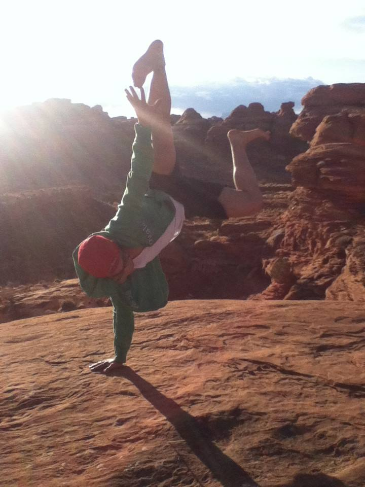

Music is Life
About Me

Hello, my name is Pao Her.
I am a .Net Programmer student at Hennepin Technical College.
This is my first programming course, and I'm enjoying it.
Here are some fun facts about me.
- I tore my right Anterior Crucial Ligament in 2009 playing football
- I'm an Eagle Scout, the highst rank in boy scouts
- I love camping, even in the snow!
- Watermelons. Cold watermelons. Especially in the summer
Music
I love music. For as long as I can remember, I've always been drawn to music. It started with the flute and violin in 8th grade. The piano came natural to me and was my main instrument. The guitar was my secondary instrument. In high school, I participated in choir and sung treble and bass. Sometimes, I record my own music and publish them on Facebook.
Music helps me focus. It conforts me when I'm feeling low. At one point, I wanted to study music in college. But now it's just a hobby. No matter what though, music will always be a part of my life.
My Bucketlist
Some things I would like to do before the end.
- Go skydiving
- Climb Mt. Fuji
- Explore the Amazon Rain Forest
- Travel to Gotham City
- Win the Powerball
Posing For The Camera
"When you reach the top, don't forget to pose for the camera."